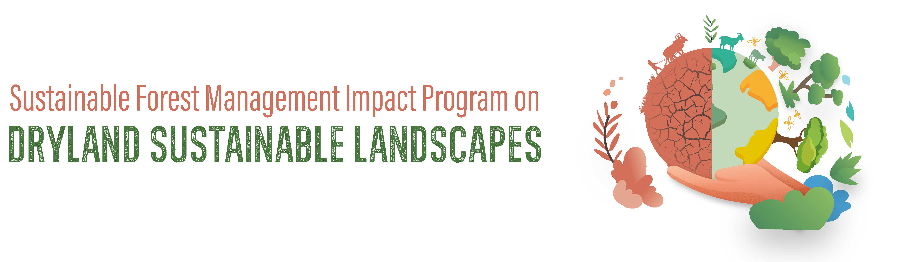

Components
The light page banner used on Home and the Library. It replaced the old dark-green gradient hero: page name + the full DSL-IP program logo, centered on the cream paper, with no descriptive paragraph. Sits directly under the top bar.

Built on the GEF-7 Dryland Sustainable Landscapes Impact Program (DSL-IP)Background = --cream with faint clay + green radial tints (identical recipe to drylands.html). Wordmark = --font-display in --forest-deep; dot = --amber; tagline serif italic in --clay-deep.
DFSA., Library.).logo-full.png) with its provenance caption.